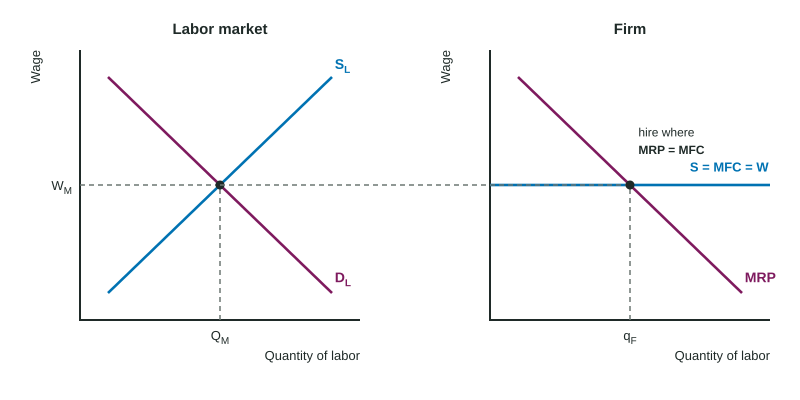

Profit-Maximizing Behavior in Perfectly Competitive Factor Markets
In a perfectly competitive labor market the wage is set where market labor demand meets labor supply, and each firm is a wage taker facing a horizontal line S = MFC = W.
Part 1 · Hook
Why this matters
Part 2 · Before you start
What this builds on
Part 3 · Prerequisite check
Quick check before you start
1. A carpenter adds 6 chairs that sell for $20 each in a competitive market. Her MRP is
- $120
- $26
- $20
- $6
Show the answer
MRP = MP × P = 6 × $20.
- Correct: $120:
- $26:
- $20:
- $6:
2. A competitive firm produces the quantity where
- MR = MC
- price is highest
- ATC is lowest
- TR is highest
Show the answer
Produce while the next unit adds at least as much to revenue as to cost.
- Correct: MR = MC:
- price is highest:
- ATC is lowest:
- TR is highest:
3. A rise in market labor demand moves the wage
- up
- down
- nowhere
- in a direction that is indeterminate
Show the answer
Labor demand shifts right along labor supply.
- Correct: up:
- down:
- nowhere:
- in a direction that is indeterminate:
Part 4 · See it
See it first

Part 5 · Step by step
How it works, step by step
- Market labor demand and supply set the wageeach small firm takes that wage as given
- The firm can hire any number of workers at that wageits MRC (MFC) is the wage: a horizontal line
- Each worker adds MRP to revenue and the wage to costthe firm hires up to where MRP = MRC
- A fixed cost changes neither MRP nor MRCthe number hired stays the same
Part 6 · Key ideas
Key ideas
- A firm in a perfectly competitive labor market is a wage taker. Draw the market and the firm side by side; carry the wage across as the line S = MFC = W.
- Marginal resource cost (MRC, also MFC) = change in total labor cost ÷ change in workers. For a wage taker, MRC = W.
- Hiring rule: hire where MRP = MRC; from a table, the last worker whose MRP is at least the MRC. Fixed costs do not change it.
- Least-cost rule: MP of labor ÷ wage = MP of capital ÷ rental price. Spend more on the input with the higher MP per dollar.
Part 7 · Misconception
A common mistake
The wrong idea: When its rent rises, a firm should hire fewer workers to keep costs down.
What actually happens: Rent is a fixed cost: it is paid whatever the number of workers. Each worker still adds the same MRP and costs the same wage, so the profit-maximizing number of workers does not change.
Part 8 · Check yourself
Check yourself
Exam-style questions. Anything you miss goes into your review queue.
1. Why is a firm in a perfectly competitive labor market called a wage taker?
- It pays each worker the value of that worker's output
- It takes a share of each worker's wage as profit
- It sets the wage where its MRP is highest
- It is too small a buyer of labor to change the wage
Show the answer
Like a price taker in a product market, a wage taker faces a horizontal supply of labor at the market wage: S = MFC = W.
- It pays each worker the value of that worker's output: Every worker gets the same market wage; pay is not set worker by worker.
- It takes a share of each worker's wage as profit: Profit is revenue minus cost; "taker" refers to taking the wage as given.
- It sets the wage where its MRP is highest: A wage taker does not set the wage; the market does.
- Correct: It is too small a buyer of labor to change the wage: Right: it takes the wage set by market labor demand and supply.
2. What is the profit-maximizing hiring rule for any firm?
- Hire until marginal revenue product equals marginal resource cost
- Hire until total revenue equals total cost
- Hire until marginal product is at its highest
- Hire until average product equals the wage
Show the answer
Each worker adds MRP to revenue and MRC to cost. Hire while MRP ≥ MRC; the last worker hired is where they are equal (or the last one where MRP is at least MRC in a table).
- Correct: Hire until marginal revenue product equals marginal resource cost: Right: MRP = MRC (for a wage taker, MRP = the wage).
- Hire until total revenue equals total cost: That is where profit is zero, not where it is largest.
- Hire until marginal product is at its highest: The highest MP is usually early; the firm keeps hiring while MRP covers MRC.
- Hire until average product equals the wage: Hiring decisions compare marginal values, not averages.
3. On the firm's graph, draw the firm's labor supply (marginal factor cost) line at the right height.
Work on the graph (it needs JavaScript), then check.
Show the answer
The firm is a wage taker: it can hire as many workers as it wants at the wage set where DL meets SL, and each added worker costs that wage. So S = MFC = W is horizontal at the market wage, carried across from the market graph.
- Key: see the explanation
4. On the firm's graph, mark the number of workers the firm hires to maximize profit.
Work on the graph (it needs JavaScript), then check.
Show the answer
The firm hires where MRP = MFC: where its MRP curve meets the horizontal wage line. Before that point each worker adds more revenue than the wage; after it, less.
- Key: see the explanation
Data
Hiring at the Larkspur furniture workshop
| Carpenters | Total product (chairs per week) |
|---|---|
| 0 | 0 |
| 1 | 10 |
| 2 | 18 |
| 3 | 25 |
| 4 | 31 |
| 5 | 36 |
| 6 | 40 |
5. Use the table. What is the marginal revenue product of the fifth carpenter, in dollars per week?
Type a number. A four-function calculator is allowed, as on the exam.
Show the answer
The fifth carpenter adds 36 - 31 = 5 chairs, and each sells for $20, so MRP = MP × P = 5 × $20 = $100.
- Answer: 100
6. Use the table. The market wage is $110 per week. How many carpenters does the workshop hire to maximize profit?
Type a number. A four-function calculator is allowed, as on the exam.
Show the answer
MRPs are $200, $160, $140, $120, $100 and $80. Hire while MRP is at least the wage (MRP ≥ MRC = $110): the fourth carpenter adds $120, the fifth only $100. So hire 4.
- Answer: 4
Scenario
Workers or kiln time at Ortolan Ceramics
Ortolan Ceramics (invented) makes bowls with workers and rented kiln time, and it buys both in competitive markets. The last worker-hour it uses adds 40 bowls and costs $20. The last hour of kiln time adds 90 bowls and costs $30. The owner wants to make the same number of bowls at the lowest cost.
7. In the scenario, how should Ortolan change its mix of inputs to make the same output at a lower cost?
- Use more worker-hours and less kiln time
- Keep the mix, because a kiln hour adds more bowls than a worker-hour
- Keep the mix, because the kiln costs more per hour than a worker
- Use more kiln time and fewer worker-hours
Show the answer
The least-cost rule: MP of labor ÷ wage = MP of capital ÷ rental price. Here 2 < 3, so move spending toward capital.
- Use more worker-hours and less kiln time: Labor gives only 2 bowls per dollar against 3 for kiln time.
- Keep the mix, because a kiln hour adds more bowls than a worker-hour: Compare output per dollar, not output alone: 90 ÷ $30 = 3 and 40 ÷ $20 = 2.
- Keep the mix, because the kiln costs more per hour than a worker: A higher price alone does not decide it; kiln time still gives more bowls per dollar.
- Correct: Use more kiln time and fewer worker-hours: Right: kiln time gives 3 bowls per dollar and labor 2, so shifting spending toward kiln time makes the same bowls for less.
Part 9 · Summary
Summary
Part 10 · Up next
What comes next
Part 11 · Connections